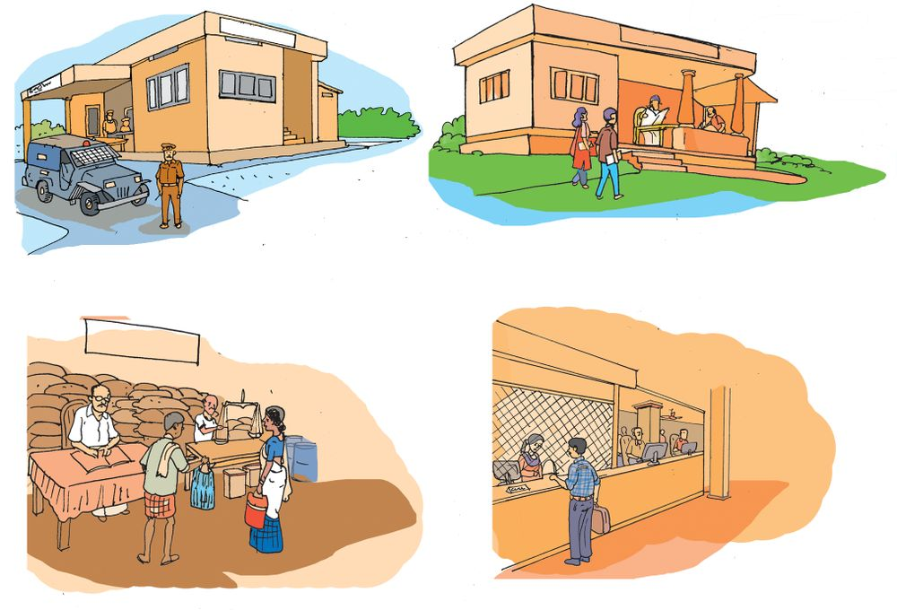

പഴയ കഥകƒ കേന്തിരിത്ഥാ≥ അനുവിന് വളരെ ഇഷ്ടമാണ്.
അസ്ഥാ- ഴ - സ്ഥ ഇ- ന ഉ- ഏശഷം പതി- വ ഉ- ഏപാലെ അന്നു മുസ്ഥബ്ലി
പറ™ു തുടത്മി...
""മോനേ, പ≠് നΩുടെ ഗ്രാമം ഇത്മനെയൊന്നുമായിരുന്നി√.
ഓലമേ™,് ചാണകം മെഴുകിയ വീടുകƒ, മവ്വെവ്വവിളത്ഥി‚െ അര≠ വെളിണ്ണം മാത്രമു≈ രാത്രികƒ. ഉരലും
ഉറിയും മച്ചകലവും മച്ചചന്തിയുമൊത്ഥെയു≈ അടുത്ഥള,
സ്കൂളിൺ പോകുന്നവരാകന്തെ, തീരെ കുറവും... അതെത്മനെയാ? ഒരുപാട് ദൂരം നടന്ന് നടന്ന് കു™ുത്മƒ മടുത്ഥും. സാധന-ത്മƒ കൊ≠ുപോകുന്നവ-രുടെ കാര്യമാണ്
അതിലും കഷ്ടം. റോഡു--കളൊന്നുമി-√ാസ്ഥ ആ കാലസ്ഥ്
ഇടവ-ഴിക-ളിലൂടെ തലണ്ണുമ-ടായി അവര-ത്മനെ നടന്നുനീത്മും.
ഒരൺ∏ം ആശ്വാസം വഴിയ-രികിലെ ചുമടുതാത്മിയാണ്....''
നാടിനു-≠ായ എ√ാ മാ‰-ത്മളും പുരോഗതിയിലേത്ഥു നയിണ്ണിന്തു≠ോ? പരിശോധിണ്ണുനോത്ഥൂ.
ഒരു നാന്തിലെ ജനത്മളുടെ പൊതു ആവശ്യത്മƒ നിറവേ-‰ുന്നതിനു≈ ചുമതല ആയ്യത്ഥാണെന്നറിയാമോ?
130
ഇന്ന് ഒരു പ്രദേശ-സ്ഥെ ജനത്മളുടെ പൊതു ആവശ്യത്മƒ നിറവേ-‰ുന്നത് തദ്ദേശ സ്വയംഭ-രണ ÿാപന-ത്മളാണ്. തദ്ദേശ സ്വയംഭരണ ÿാപന-ത്മളിലേത്ഥു≈ പ്രതിനിധികളെ ഓരോ പ്രദേശസ്ഥെയും ജനത്മƒ ആണ് തിര-™െടുത്ഥുന്നത്. ജനപ്രതിനിധികളെ -തെര-™െടുത്ഥുന്നത് വോന്തെടു-∏ിലൂടെയാണ്.
തദ്ദേശ സ്വയംഭരണ ÿാപന-ത്മƒ ഏതൊത്ഥെയാണ്?
ഗ്രാമ-∏-ഞ്ചായസ്ഥും മുനിസി-∏ാലി-‰ികളും കോയ്യപറേഷനുകളും
തദ്ദേശ- സ്വയംഭ-രണ ÿാപന-ത്മളാണ്.
നിത്മƒ താമസിത്ഥുന്ന പ്രദേശം
അടയാള-മിന്ത് സൂചി-∏ിത്ഥുക.
ഗ്രാമ-∏ഞ്ചായസ്ഥ്
മുനിസി-∏ാലി‰ി
കോയ്യപറേഷ≥
പേരെഴുതൂ
കേരള-സ്ഥിൺ ത്രിതല പഞ്ചായസ്ഥ് സംവിധാന-മാണ് നിലവിലു-≈ത്.
ഗ്രാമ-∏-ഞ്ചായസ്ഥ്, ഞ്ഞോത്ഥ് പഞ്ചായ-സ്ഥ്, ജി√ാ പഞ്ചായസ്ഥ് എന്നിവയാണ് അവ.
131
നാടിനെ അറിയാ≥
ഗ്രാമ∏ഞ്ചായ-സ്ഥി‚െ തലവ≥ പഞ്ചായസ്ഥ് പ്രസിഡ‚ാണ്.
മുനിസി-∏ൺ ചെയയ്യമാനാണ് മുനിസി∏ാലി-‰ിയുടെ തലവ≥.
കോയ്യപറേഷ‚െ ഭരണസ്ഥലവനാണ് മേയയ്യ. ഓരോ വായ്യഡിൺ
അ√െന്നിൺ ഡിവിഷ-നിൺ നിന്നും -തെര-™െടുസ്ഥ ജനപ്രതിനിധിക-ളാണ് ഭരണ-സ്ഥല-വ-∑ാരെ നി›-യിത്ഥുന്നത്.
സംഭാഷണം ശ്ര≤ിണ്ണി√േ?
ഗ്രാമസ-ഭയിൺ നിയ്യബ-'-മായും പന്നെടുത്ഥണ-മെന്ന് പറയുന്നത് എഗ്ലുകൊ≠ാണ്?
ഒരു നാടി‚െ വികസ-നാവ-ശ്യത്മƒ ചയ്യണ്ണചെയ്ത് നിയ്യദേശിത്ഥുന്നത്
ആ നാന്തിലെ ജനത്മƒ ഒസ്ഥുചേയ്യന്നാണ്. ഇതാണ് ഗ്രാമസഭ.
വിദ്യാലയം ഒരു പൊതുÿാപനം
നിത്മƒ പഠിത്ഥുന്ന വിദ്യാലയം ഒരു പൊതുÿാപന-മാണ്. നിത്മƒത്ഥ്
പഠിണ്ണു വളരാ≥ എഗ്ലൊത്ഥെ സൗകര്യത്മളും സേവന-ത്മളുമാണ് വിദ്യാലയസ്ഥിൺ ലഭിത്ഥുന്നത്?
$
പാഠപുസ്തകം
$
സ്കോളയ്യഷി-∏ുകƒ
$
133
നാടിനെ അറിയാ≥
വിദ്യാഭ്യാസം നΩുടെ അവകാശ-മാണ്. ആ അവകാശം ലഭ്യമാത്ഥുന്നത്
പൊതുവിദ്യാല-യത്മളാണ്.
Page 70
Figure fig_ch06_p070_01 (Page 70)

Figure fig_ch06_p070_02 (Page 70)
നമുത്ഥ് സേവന-ത്മƒ നൺകുന്ന മ‰െഗ്ലൊത്ഥെ പൊതു-ÿാപ-നത്മളു≠്?
പോല
ഈസ് ല്ലേ
ഷ≥
ഒന്നായ് ഒരു ന√ നാളേത്ഥ്
തദ്ദേശ -സ്വയംഭ-രണ ÿാപന-ത്മളെയും പൊതു-ÿാപ-നത്മളെയും പരിചയ-∏െന്ത√ോ. ഇവ കൂടാതെ നാടി‚െ ന∑-യ്ത്ഥായി പ്രവയ്യസ്ഥിത്ഥുന്ന
മ‰ു ÿാപന-ത്മളും കൂന്തായ്മക-ളുമു-≠്.
$ വായനശാലകƒ
$ ക്ല∫ുകƒ
$ കുടുംബശ്രീ
മ‰െഗ്ലൊത്ഥെ കൂന്തായ്മകƒ നിത്മളുടെ നാന്തിലു-≠്?
നമുത്ഥ് അഭി- മ ആ- ന ഇ- ത്ഥ ആ- വ ഉന്ന ഒന്തേറെ കാര്യ- ത്മ ƒ നാടി- ന ഉ≠് .
നΩുടെ നാടി‚െ പുരോഗ-തിത്ഥ് കാരണം ജനത്മളുടെ കൂന്തായ്മയാണ്. നΩുടെ എെക്യമാണ് നാടി‚െ കരുസ്ഥ്.
$
$
$
$
$
$
$
നΩുടെ നാടിന് ഒരു ചരിത്രമു-≠െന്ന് ക≠െസ്ഥുന്നു, എഴുതുന്നു.
ചരിത്രസ്ഥെ സൂചി-∏ിത്ഥുന്ന അടയാള-ത്മƒ തിരിണ്ണറി™് വിശദീകരിത്ഥുന്നു.
നΩുടെ നാടിന് പല മാ‰-ത്മളും ഉ≠ായിന്തു≠െന്ന് മന- ഇലാത്ഥി
വിശദീക-രിത്ഥുന്നു.
നാന്തിലെ ജനത്മളുടെ ആവശ്യത്മƒത്ഥനുസൃത-മായാണ് പുരോഗതി
ഉ≠ായതെന്ന് ക≠െസ്ഥി വിശദീക-രിത്ഥുന്നു.
നാടിന് അതി-‚േതായ ഭരണസംവിധാന-മു-≠െന്നും ജനത്മളുടെ
ആവ- ശ ്യ- ത്മ ƒ നിറ- ഏവ- ‰ ഉ- ന്ന ത് ഭര- ണ - ÿ ആ- പ - ന - ത്മ - ള ആ- എണന്നും
ക≠െസ്ഥി പറയുന്നു.
തദ്ദേശ- സ്വയംഭ-രണ ÿാപന-ത്മളാണ് ഗ്രാമ-∏ഞ്ചായസ്ഥ്, മുനിസി∏ാലി-‰ി, കോയ്യപറേഷ≥ എന്നിവ എന്നും ഗ്രാമ-∏-ഞ്ചായസ്ഥ്, ഞ്ഞോത്ഥ്
പഞ്ചായ-സ്ഥ്, ജി√ാ- പഞ്ചായ-സ്ഥ് എന്നത് ത്രിതല പഞ്ചായസ്ഥ് സംവിധാനമാണെന്നും വിശദീക--രിത്ഥുന്നു.
പൊതു-ÿാപ-നത്മളെത്ഥുറിണ്ണും അവ നൺകുന്ന സേവന-ത്മളെത്ഥുറിണ്ണും വിശദീക-രിത്ഥുന്നു.
135